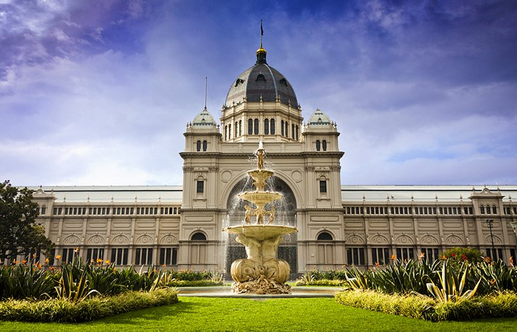
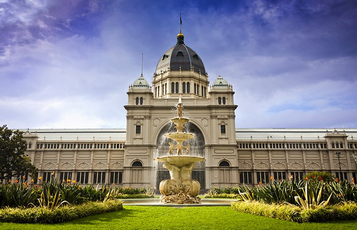
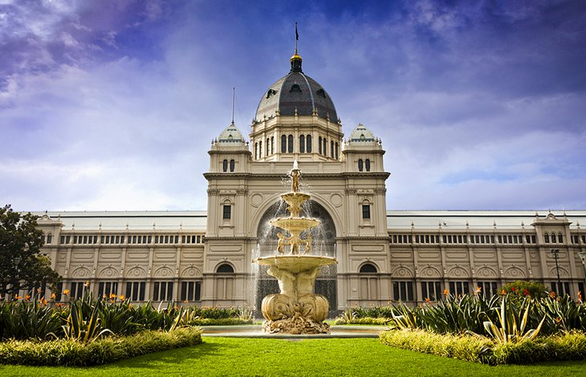

Melbourne meaning "place next to the Yarra River" is the capital and most populous city of the Australian state of Victoria, and the second most populous city in Australia and Oceania.Its name refers to an urban agglomeration of 9,993 comprising a metropolitan area with 31 municipalities,and is also the common name for its city centre. The city occupies much of the coastline of Port Phillip bay and spreads into the Hinterland towards the Dandenong and Macedon ranges, Mornington Peninsula and Yarra Valley. It has a population of 5 million (19% of the population of Australia), and its inhabitants are referred to as "Melburnians". Home to Indigenous Australians for over 40,000 years, the Melbourne area served as a popular meeting place for local Kulin nation clans. A short-lived penal settlement was established at Port Phillip, then part of the British colony of New South Wales, in 1803, but it was not until 1835, with the arrival of free settlers from Van Diemen’s Land, that Melbourne was founded.It was incorporated as a Crown settlement in 1837, and named Melbourne by Governor General Richard Bourke on 10 April 1837 in honour of the then British Prime Minister, William Lamb, 2nd Viscount Melbourne.In 1851, four years after Queen Victoria declared it a city, Melbourne became the capital of the new colony of Victoria.In the wake of the 1850s Victorian gold rush, the city entered a lengthy boom period that, by the late 1880s, had transformed it into one of the world's largest and wealthiest metropolises.After the federation of Australia in 1901, it served as the interim seat of government of the new nation until Canberra became the permanent capital in 1927.Today, it is a leading financial centre in the Asia-Pacific region and ranks 15th in the Global Financial Centres Index. Melbourne is home to many of Australia's best-known landmarks, such as the Melbourne Cricket Ground, the National Gallery of Victoria and the World Heritage-listed Royal Exhibition Building. Noted for its cultural heritage, the city gave rise to Australian rules football, Australian impressionism and Australian cinema, and has more recently been recognised as a UNESCO City of Literature and a global centre for street art, live music and theatre. It hosts major annual international events, such as the Australian Grand Prix and the Australian Open, and also hosted the 1956 Summer Olympics and the 2006 Commonwealth Games. Melbourne consistently ranked as the world's most liveable city for much of the 2010s.The main airport serving the city is Melbourne Airport (also referred to as Tullamarine Airport), which is the second busiest in Australia, and Australia's busiest seaport the Port of Melbourne.Its main metropolitan rail terminus is Flinders Street station and its main regional rail and road coach terminus is Southern Cross station. It also has the most extensive freeway network in Australia and the largest urban tram network in the world.
